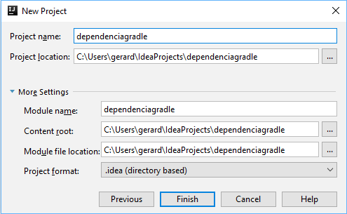
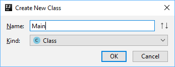
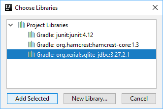
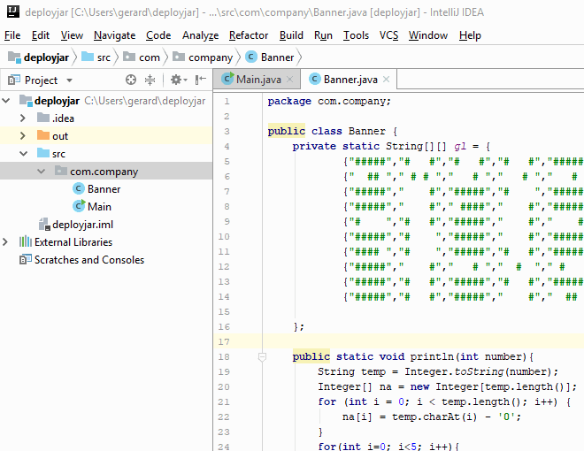
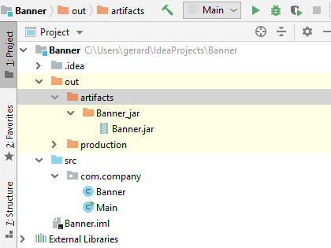
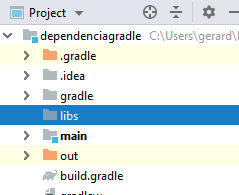

L'objectiu d'aquest CodeLab és utlitzar Gradle per a automatitzar la construcció d'una aplicació.
Gradle és un sistema d'automatització de construcció d'aplicacions. Permet configurar les tasques de construcció i l'ordre en que s'han d'executar. Incorpora un sistema de gestió de dependències que suporta el repositori de llibreries Maven. En aquest repositori trobem milers de llibreries amb diverses utilitats que podem incorporar als nostres projectes.
D'aquesta forma és molt fàcil incorporar una llibreria externa a un projecte. Habitualment, només cal indicar el nom i la versió de la llibreria que volem incorporar i Gradle la descarregarà i la incorporarà al projecte.
En aquest CodeLab instal·larem instal·larem una llibreria de forma automàtica des del repositori Maven (la llibreria que instal·larem serà, a mode d'exemple, la llibreria SQLite-JDBC que ens proporciona accés a un base de dades SQLite).
Després aprendrem a instal·lar llibreries que ja es troben al nostre ordinador. Normalment, les llibreries es poden descarregar en format JAR, però en aquest CodeLab el que farem serà crear nosaltres una llibreria simple i importar-la amb Gradle.
Inicia IntelliJ i crea un nou projecte anomenat "DependenciaGradle".
Selecciona "Gradle" com a tipus de projecte:

Introdueix les següents dades del projecte:
GroupId: com.example
ArtifactId: dependenciagradle

Marca l'opció "Use auto-import"

Finalitza la creació del projecte:

Crea un mòdul de projecte
Crea un nou mòdul de projecte. Ves al menu File > Add > Module... i segueix les instruccions habituals per a crear un mòdul Java:


A la carpeta del mòdul que tot just s'ha creat, afegeix una nova classe Java, que contindrà la classe Main del projecte:

Posa-li de nom Main:

Crea en la classe Main el mètode main():
public class Main {
public static void main(String[] args) {
}
}Per a afegir llibreries externes al projecte cal afegir-les al fitxer de configuració build.gradle
Trobaràs aquest fitxer a la carpeta arrel del projecte:

La llibreria d'exemple que instal·larem és aquesta: https://mvnrepository.com/artifact/org.xerial/sqlite-jdbc
Cal afegir doncs aquesta dependencia a l'arxiu build.gradle en la secció dependencies
dependencies {
testCompile group: 'junit', name: 'junit', version: '4.12'
implementation 'org.xerial:sqlite-jdbc:3.27.2.1'
}Un cop afegida la llibreria al projecte, refresquem el projecte Gradle per a aplicar els canvis:

Ara cal afegir la llibreria als mòduls del projecte on s'usuarà. En el nostre cas al mòdul "Main".
Anem a File > Project Structure
A la finestra de configuració del projecte cliquem a l'apartat Modules i seleccionem el mòdul main
A la pestanya Dependencies fem clic a l'icona  i seleccionem
i seleccionem 2 Library

Seleccionem la llibreria org.xerial:sqlite-jdbc

Usa la llibreria
Un cop tenim incorporada la llibreria al nostre projecte ja la podem utilitzar.
En el cas de la llibreria SQLite-JDBC, ens permet crear i manipular a una base de dades relacional.
Realitzarem una prova creant una taula, inserint i consultant dades.
import java.sql.*;
public class Main {
public static void main(String[] args) throws SQLException{
String db = "jdbc:sqlite:mydatabase.db";
Statement stmt = DriverManager.getConnection(db).createStatement();
stmt.execute("CREATE TABLE prova(camp1 integer, camp2 text);");
stmt.execute("INSERT INTO prova VALUES(6789, 'hola gradle');");
stmt.execute("INSERT INTO prova VALUES(2345, 'hola sqlite');");
ResultSet rs = stmt.executeQuery("SELECT * FROM prova;");
while(rs.next()){
System.out.println(rs.getInt("camp1"));
System.out.println(rs.getString("camp2"));
}
}
}Com hem dit a la introducció, les llibreries a més de instal·lar-se automàticament des del repositori Maven, també es poden descarregar en format JAR al nostre ordinador i afegir-les des d'ahí.
En aquest CodeLab aprendrem a crear i exportar una petita llibreria, i a instal·lar-la utilitzant Gradle.
Crear la llibreria
El primer pas serà programar una petita llibreria. Crea un projecte "Java" nou i anomena'l Banner.
La llibreria que anem a programar és molt simple, ja que només és una prova. Es tracta d'una classe anomenada Banner que té un mètode per a mostrar nombres a l'estil d'un Matrix Display.
Exemple:
Banner.println(34545);
El codi de la llibreria és aquest:
public class Banner {
private static String[][] gl = {
{"#####","# #","# #","# #","#####" }, //0
{" ## "," # # "," # "," # "," # " }, //1
{"#####"," #","#####","# ","#####" }, //2
{"#####"," #"," ####"," #","#####" }, //3
{"# ","# #","#####"," #"," #" }, //4
{"#####","# ","#####"," #","#####" }, //5
{"#### ","# ","#####","# #","#####" }, //6
{"#####"," #"," # "," # "," # " }, //7
{"#####","# #","#####","# #","#####" }, //8
{"#####","# #","#####"," #"," ## " } //9
};
public static void println(int number){
String temp = Integer.toString(number);
Integer[] na = new Integer[temp.length()];
for (int i = 0; i < temp.length(); i++) {
na[i] = temp.charAt(i) - '0';
}
for(int i=0; i<5; i++){
for(Integer d: na){
System.out.print(gl[d][i] + " ");
}
System.out.println();
}
}
}Crea la classe Banner al projecte que tot just has creat i copia-hi el codi.
Crea un Artifact Jar
Per a generar un arxiu JAR, primer s'ha de configurar un Artifact de tipus JAR. Un Artifact és un conjunt de recursos que es poden posar en un mateix arxiu.
Per a configurar l'Artifact cal anar a: File > Project Structure... > Artifacts > > JAR > From modules with dependencies...

Construeix el JAR
Un cop definit l'Artifact JAR, ja podem construir l'arxiu JAR amb la llibreria.
Per fer-ho ves al menú Build > Build Artifacts...
Seleciona l'opció Build

A la carpeta out/artifacts ens haurà generat l'arxiu JAR:

Importa la llibreria
Torna al projecte DependenciaGradle, i utilitzarem Gradle per a afegir a aquest projecte la llibreria Banner.
- Crea un directori, en l'arrel del projecte, anomenat
libs(en aquest directori afegiriem totes les llibreries que necessitèssim):
 - Copia la llibreria Banner.jar dintre d'aquest directori (pots arrossegar-la des d'un projecte a l'altre):

- Afegeix la dependència a l'arxiu
build.gradled
implementation fileTree(dir: 'libs', include: ['*.jar'])- Obre la finestra Gradle (
View>Tool Windows>Gradle) i refresca el projecte clicant la icona
Usa la llibreria
Ja pots usar la llibreria al projecte:
Banner.println(123456);Et demanarà que incloguis la llibreria Banner al classpath: